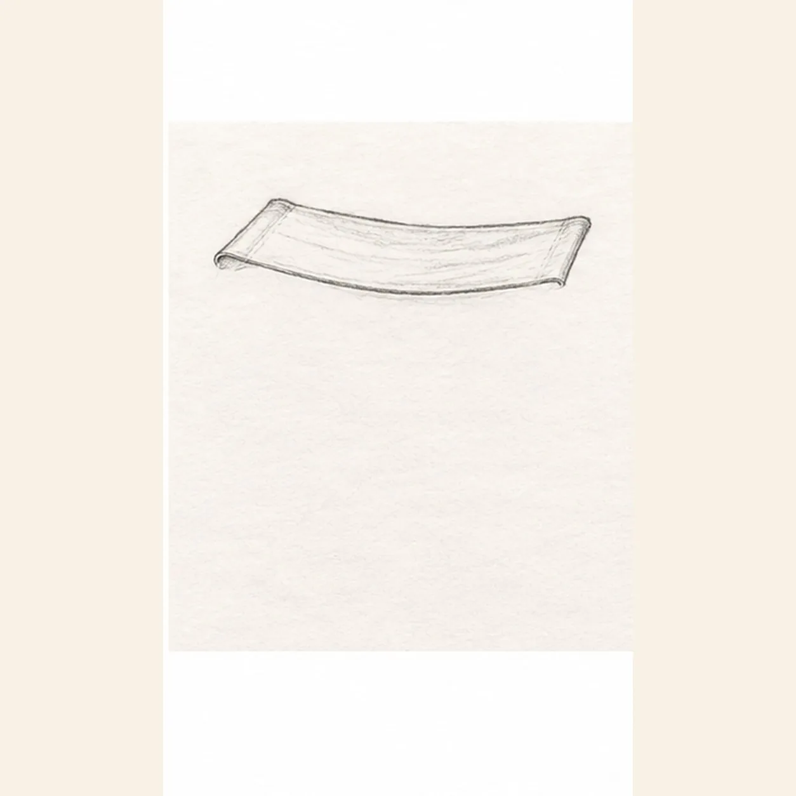
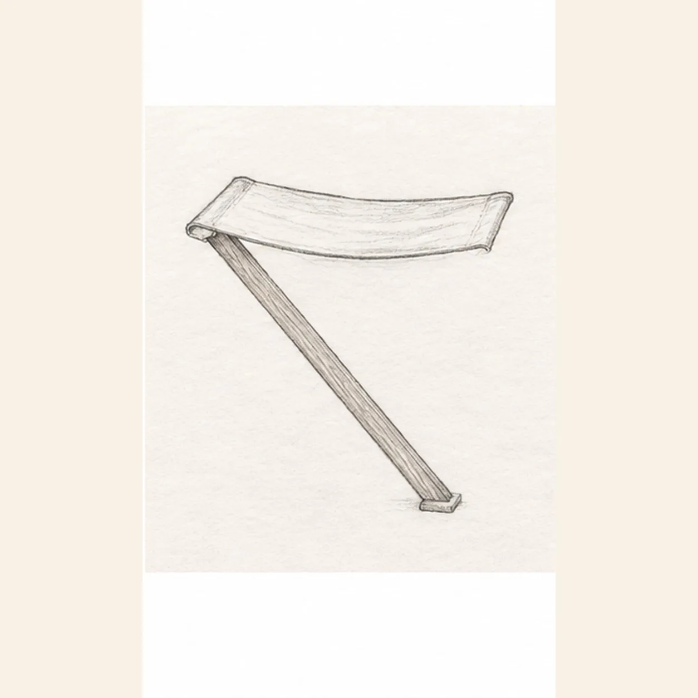
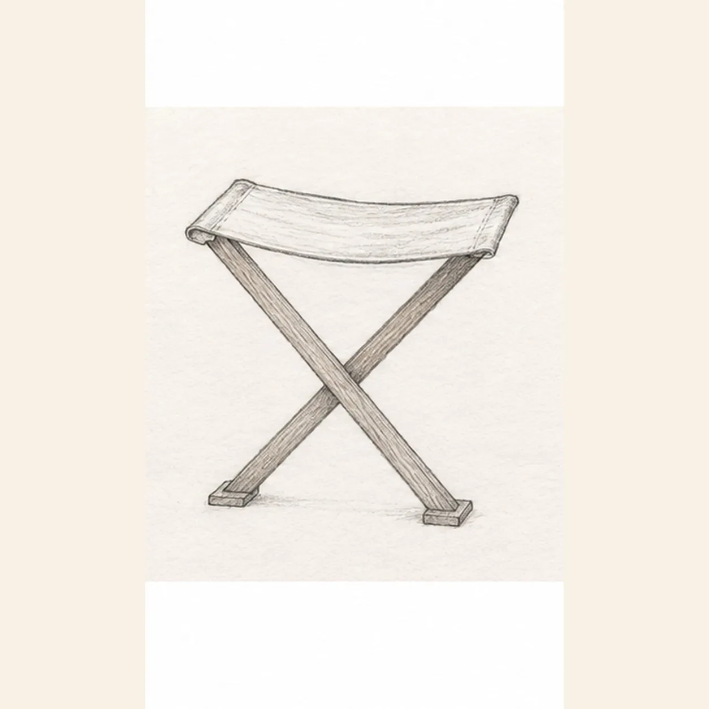
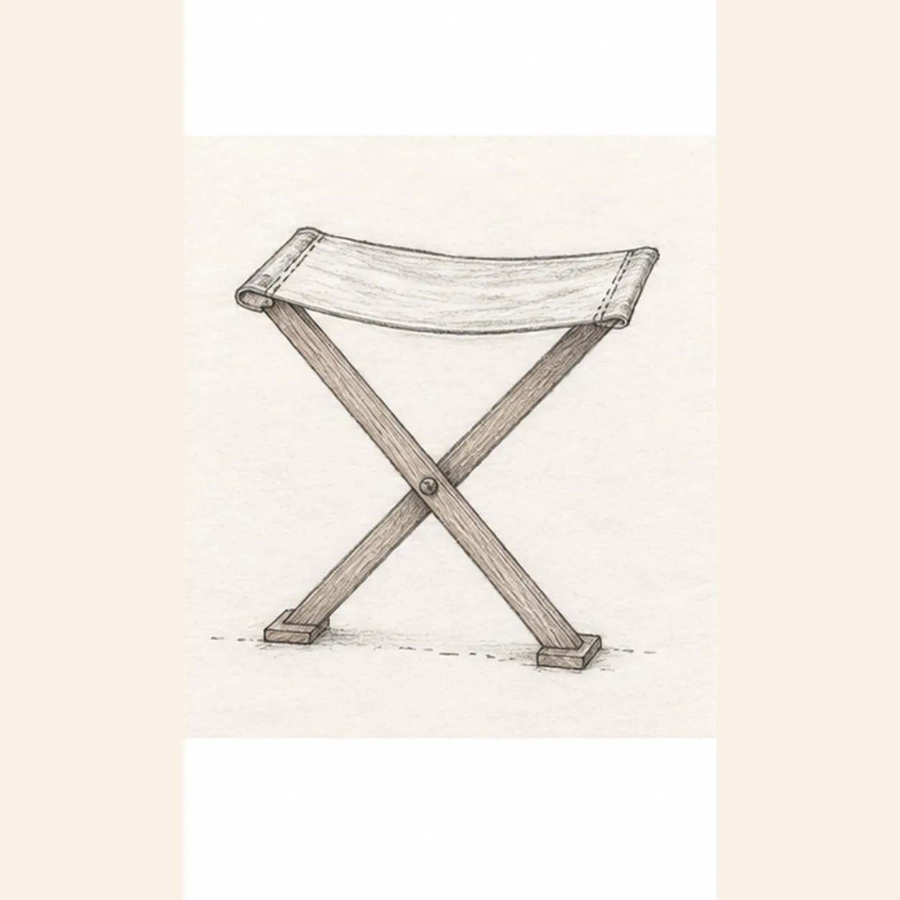

From the archive
Let's draw a folding camp stool
Treat this as one small practice round: build the subject lightly, notice the shapes, then darken only the lines that help the finished sketch.
-
01

Shape the canvas seat
Draw a long shallow trapezoid across the upper center. Bow its lower edge down slightly so the canvas looks taut but flexible.
Sketch tip: Keep the canvas wider than the space between the eventual feet; its shallow sag gives the whole sketch a clear top edge.
-
02

Drop the front leg
From the underside of the seat's left end, draw two close diagonal lines down to the lower right. Close them with a short flat foot.
Sketch tip: Let the leg start under the left seat roll and end well to the right of center; draw its two long edges with nearly even spacing.
-
03

Cross the rear leg
From the seat's right underside, angle a second narrow leg down left. Stop its two edges where the front leg covers them, then resume below the crossing and finish at a flat left foot.
Sketch tip: Hide the rear leg where the front leg crosses it, then resume its edges below the crossing without shifting its diagonal.
-
04

Mark the pivot and seams
Place one small round pivot on the front leg at the crossing. Stitch a short seam near each canvas end and sketch a broken ground line below the two existing feet.
Sketch tip: Keep the pivot on the front leg, and place the short seams close to the rolled canvas ends.
-
05

Shade the folding stool
Shade the existing seat with muted olive pencil and the two wooden legs with warm brown. Soften the broken ground line into a broad graphite shadow; deepen the same pivot and seams without adding new parts.
Sketch tip: Pull olive strokes along the canvas and brown strokes along the wood grain; keep the pivot readable against the crossing.